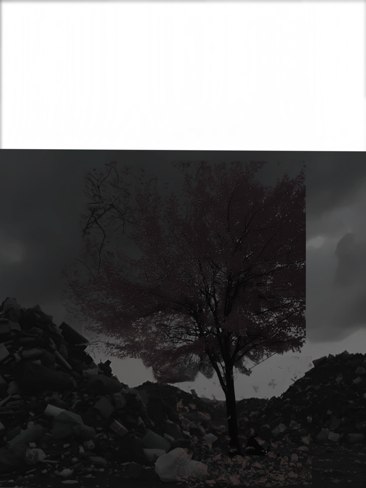
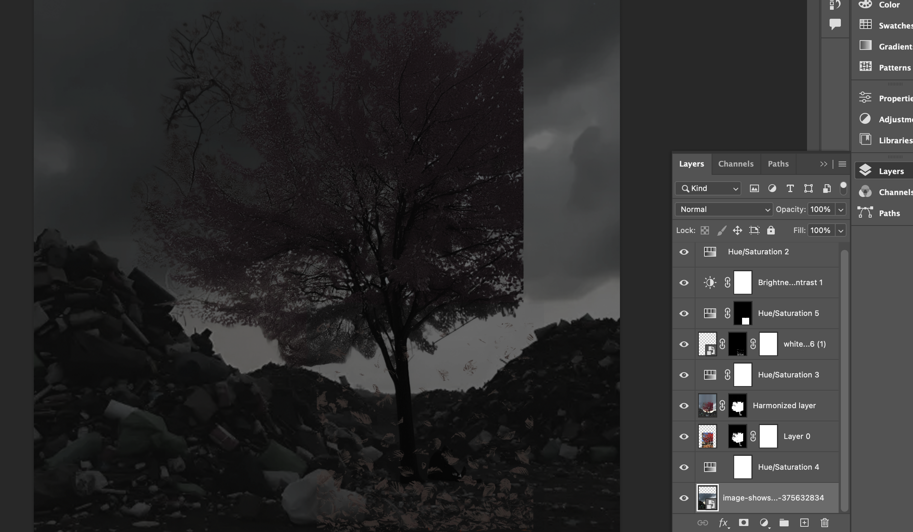

My photomontage shows how pollution affects nature by turning something beautiful into something dark and damaged. After photoshopping the images together, the scene became darker, with leaves falling through the air. The falling leaves represent nature slowly dying or weakening because of pollution. The bright red trees that once looked full of life now feel overshadowed by the dark sky and the landfill in the background. This contrast shows how pollution can take over natural spaces and change their mood from peaceful to heavy and sad.
In Photoshop, I used layer masks to blend the landfill into the forest scene so it looks like the pollution is spreading into nature. I used blending modes like Multiply and Overlay to darken the sky and make the overall image feel more dramatic. The darker tones help communicate how pollution harms the environment, affecting trees, air, and land. The picture of the tree was my own photo, and others were public domain or from chrome. The final message of my photomontage is that pollution slowly damages nature, and if we do not take care of the environment, the beauty around us will continue to fade.